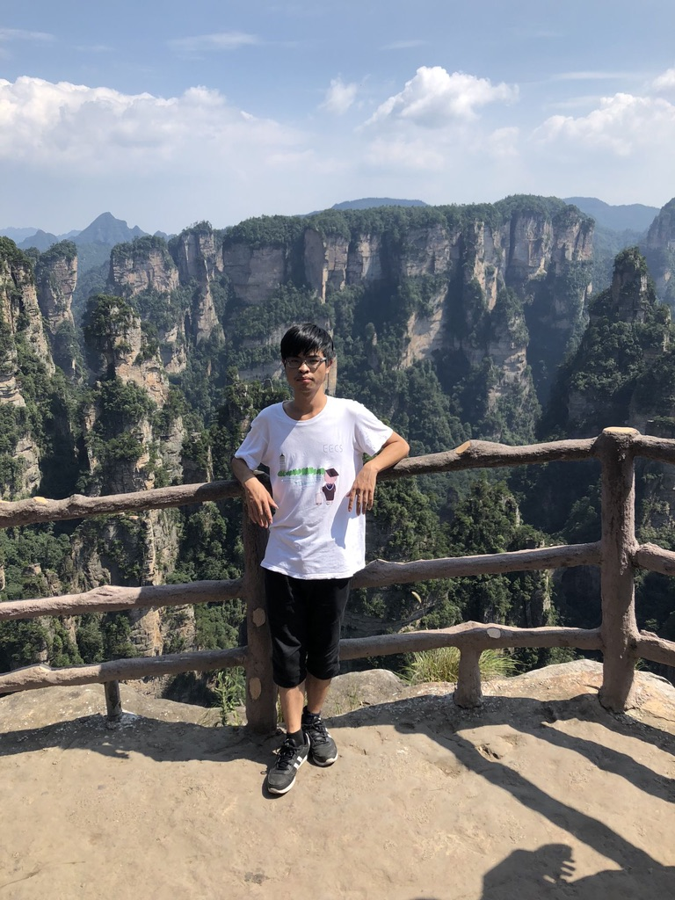

Xiaowei Jiang (江孝炜)
I am a Ph.D. student at YMSC, under the supervision of Professor Caucher Birkar.
This is my CV.
Office: Shuangqing Complex Building, C740, Tsinghua University.
Emails: jxw20[at]mails[dot]tsinghua[dot]edu[dot]cn, xiaoweijiang[at]pku[dot]edu[dot]cn
Research interest: Birational Geometry
- Minimal Model Program and Abundance
- Boundedness and Moduli of Algebraic Varieties

Preprints
- Failure of Boundedness for Generalised Log Canonical Surfaces (joint with Christopher Hacon), arXiv:2504.06482 [arXiv] [PDF]
- Boundedness of polarized log Calabi-Yau fibrations with bounded bases (joint with Junpeng Jiao and Minzhe Zhu), arXiv:2504.05243 [arXiv] [PDF]
- Boundedness of klt good minimal models, arXiv:2312.03313 [arXiv] [PDF]
Other writings
- Boundedness of Good Minimal Models. Ph.D. Thesis, Tsinghua University.
[draft version]
[slide]
- Appendix to Special MMP for log canonical generalised pairs
(joint with Vladimir Lazić
and Nikolaos Tsakanikas),
arXiv:2108.00993 [arXiv]
Organized Seminars
- Learning seminar on the b-semiampleness conjecture
(organized with Junpeng Jiao),
Fall 2025, Tsinghua University.
- Birational Geometry Students' Seminar (organized with Junpeng Jiao),
Fall 2023 ~ Spring 2024, Tsinghua University.
- Tsinghua Birational Geometry Learning Seminar (organized with Bingyi Chen),
Fall 2021 ~ Spring 2023, Tsinghua University.
Invited Talks
- Boundedness of klt good minimal models, Fudan University,
Seminar Talk,
Jan 8, 2026.
- Boundedness of klt good minimal models, Shandong University,
Seminar Talk,
Dec 11, 2025.
- Proof of b-semiampleness conjecture, Xiamen University,
b-semiampleness workshop,
Dec 5, 2025.
- Boundedness of polarized log Calabi-Yau fibrations with bounded bases, Centro di Ricerca Matematica Ennio De Giorgi, Pisa,
Workshop on Boundedness and Moduli Problems in Birational Geometry and Foliation Theory (Oct 27 - Oct 31),
Oct 31, 2025.
- Boundedness of polarized log Calabi-Yau fibrations with bounded bases, Tsinghua University,
Beijing Algebraic Geometry Day,
Aug 23, 2025.
- Boundedness and moduli of klt good minimal models, Chongqing University,
Seminar Talk,
Jun 6, 2025.
- Boundedness of polarized log Calabi-Yau fibrations with bounded bases, Tsinghua University,
Algebraic Geometry Workshop,
May 30, 2025.
- Boundedness of klt good minimal models (I)&(II), Xiamen University,
Seminar Talk,
May 13&14, 2025.
- Boundedness of Fano Type Fibrations, East China Normal University,
Algebraic Geometry Seminar, Nov 14, 2024.
- Boundedness and moduli of traditional stable minimal models, Peking University, AG Preprint Seminar, Jan 4, 2024.
[slide]
Graduate Student Seminar Talks
- Introduction,
Reading Seminar on Moduli of Boundary Polarized Calabi-Yau Pairs, Peking University, October 2023.
- Rationality in families, One Theorem Seminar, Tsinghua University, February 2023.
- Relative Fujita conjecture, Reading Seminar on Local Positivity, Tsinghua University, December 2022.
- The Miyaoka-Yau inequality and uniformisation of higher-dimensional algebraic varieties,
Tsinghua Preprint Seminar, Tsinghua University, September 2022.
- Characterization of Abelian varieties,
Generic Vanishing Learning Seminar,
Tsinghua University, March 2022.
Teaching
- Algebraic geometry, Spring 2022, TA.
Visiting
- Jan 7 - Jan 9, 2026, visiting Prof. Jingjun Han, Fudan University, Shanghai, China.
- Dec 9 - Dec 11, 2025, visiting Prof. Feng Hao, Shandong University, Jinan, China.
- Nov 30 - Dec 5, 2025, visiting Prof. Chuyu Zhou, Xiamen University, Xiamen, China.
- Jun 5 - Jun 8, 2025, visiting Prof. Yu Zou, Chongqing University, Chongqing, China.
- May 12 - May 16, 2025, visiting Prof. Chuyu Zhou, Xiamen University, Xiamen, China.
- Jan 21 - May 1, 2025, visiting Prof. Christopher Hacon, The University of Utah, Salt Lake City, USA.
- Nov 13 - Nov 16, 2024, visiting Prof. Lu Qi, East China Normal University, Shanghai, China.
- Aug 23 - Aug 25, 2024, visiting Prof. Santai Qu, Institute of Geometry and Physics, USTC, Shanghai, China.
Travel
- 2026
- Jan 18 - Jan 21, 2026, Workshop on Analytic Methods in Complex Geometry,
Westlake University, Hangzhou, China.
- Jan 4 - Jan 7, 2026, Workshop on K-stability,
East China Normal University, Shanghai, China.
- 2025
- Dec 26 - Dec 31, 2025, Workshop on algebraic geometry,
TSIMF, Sanya, China.
- Oct 27 - Oct 31, 2025，
Workshop on Boundedness and Moduli Problems in Birational Geometry and Foliation Theory,
Centro di Ricerca Matematica Ennio De Giorgi, Pisa, Italy.
- Oct 16 - Oct 18, 2025,
Algebraic Geometry Workshop, BIMSA, Beijing, China.
- Aug 18 - Aug 22, 2025, Summer School on Birational Geometry of Foliations,
Peking University, Beijing, China.
- Jul 14 - Jul 25, 2025,
2025 Summer Research Institute in Algebraic Geometry,
Colorado State University, Fort Collins, CO, USA.
- Jun 30 - Jul 11, 2025, 2025 SCMS Algebraic Geometry Summer School,
Fudan, Shanghai, China.
- Jun 23 - Jun 27, 2025, Workshop on Fano Varieties,
Peking University, Beijing, China.
- Jun 9 - Jun 13, 2025, Southeastern Algebraic Geometry Symposium VIII,
SUSTech, Shenzhen, China.
- May 28 - Jun 1, 2025, Conference on Explicit Birational Geometry,
Peking University, Beijing, China.
- 2024
- Dec 22 - Dec 27, 2024, Workshop on algebraic geometry,
TSIMF, Sanya, China.
- Oct 21 - Oct 25, 2024,
Sino-French Conference on Algebraic Geometry
(in Memory of Prof. Gang Xiao), Academy of Mathematics and Systems Science, Beijing, China.
- Oct 6 - Oct 8, 2024, Birational Algebraic Geometry Workshop,
CQUT, Chongqing, China.
- Sep 25 - Sep 29, 2024, Workshop on Birational Geometry,
Fudan University, Shanghai, China.
- Aug 26 - Aug 30, 2024, Foliation and Birational Geometry,
Fudan University, Shanghai, China.
- Aug 16 - Aug 23, 2024, Workshop on Hodge theory 2024,
University of Science and Technology of China, Hefei, China.
- Jul 18 - Jul 24, 2024, International Summer School of Algebraic Geometry,
Fudan University, Shanghai, China.
- Jul 14 - Jul 19, 2024,
The 4th National Algebraic Geometry Conference, Shandong University, Weihai, China.
- May 20 - May 24, 2024,
International Workshop on Higher Teichmüller Theory,
Nankai University, Tianjin, China.
- Apr 22 - Apr 26, 2024,
Complex Algebraic Geometry and Related Topics, Academy of Mathematics and Systems Science, Beijing, China.
- Apr 5 - Apr 9, 2024,
Spring Workshop on Algebraic Geometry, Wuhan University, Wuhan, China.
- 2023
- Dec 22 - Dec 26, 2023,
Workshop on algebraic geometry, TSIMF, Sanya, China.
- Dec 9 - Dec 11, 2023,
Young Perspectives on Algebraic Geometry, Academy of Mathematics and Systems Science, Beijing, China.
- Jul 12 - Jul 14, 2023,
ICBS Satellite Conference on Algebraic and Arithmetic Geometry, BIMSA, Beijing, China.
- Jun 28 - Jun 29, 2023,
Birational Geometry Workshop,
Tsinghua University, Beijing, China.
- Jun 2 - Jun 4, 2023,
Birational Algebraic Geometry Workshop,
CQUT, Chongqing, China.
- May 8 - May 12, 2023,
Conference on Algebraic Geometry and Related Topics,
Nanjing University, Nanjing, China.
- Apr 21 - Apr 23, 2023,
2023 Workshop on Explicit Birational Geometry, Fudan University, Shanghai, China.
- Apr 7 - Apr 9, 2023,
Southeastern Algebraic Geometry Symposium (IV),
SUSTech, Shenzhen, China.
- Jul 12 - Jul 14, 2023,
BIMSA-YMSC p-adic Workshop: the Emerton–Gee stack and beyond, BIMSA, Beijing, China.
- 2022 and before
- Oct 21 - Oct 22, 2022,
Birational Geometry Workshop, BIMSA, Beijing, China.
- Jul 4 - Jul 17, 2021,
Summer School on Birational Geometry of Algebraic Varieties, Xiamen University, Xiamen, China.
- Nov 5 - Nov 8, 2020,
Workshop on Geometric Structures and Topological Invariants, Sichuan University, Chengdu, China.
Other writings
- Boundedness of Good Minimal Models. Ph.D. Thesis, Tsinghua University. [draft version] [slide]
- Appendix to Special MMP for log canonical generalised pairs (joint with Vladimir Lazić and Nikolaos Tsakanikas), arXiv:2108.00993 [arXiv]
Graduate Student Seminar Talks
- Introduction, Reading Seminar on Moduli of Boundary Polarized Calabi-Yau Pairs, Peking University, October 2023.
- Rationality in families, One Theorem Seminar, Tsinghua University, February 2023.
- Relative Fujita conjecture, Reading Seminar on Local Positivity, Tsinghua University, December 2022.
- The Miyaoka-Yau inequality and uniformisation of higher-dimensional algebraic varieties, Tsinghua Preprint Seminar, Tsinghua University, September 2022.
- Characterization of Abelian varieties, Generic Vanishing Learning Seminar, Tsinghua University, March 2022.
Teaching
- Algebraic geometry, Spring 2022, TA.
Visiting
- Jan 7 - Jan 9, 2026, visiting Prof. Jingjun Han, Fudan University, Shanghai, China.
- Dec 9 - Dec 11, 2025, visiting Prof. Feng Hao, Shandong University, Jinan, China.
- Nov 30 - Dec 5, 2025, visiting Prof. Chuyu Zhou, Xiamen University, Xiamen, China.
- Jun 5 - Jun 8, 2025, visiting Prof. Yu Zou, Chongqing University, Chongqing, China.
- May 12 - May 16, 2025, visiting Prof. Chuyu Zhou, Xiamen University, Xiamen, China.
- Jan 21 - May 1, 2025, visiting Prof. Christopher Hacon, The University of Utah, Salt Lake City, USA.
- Nov 13 - Nov 16, 2024, visiting Prof. Lu Qi, East China Normal University, Shanghai, China.
- Aug 23 - Aug 25, 2024, visiting Prof. Santai Qu, Institute of Geometry and Physics, USTC, Shanghai, China.
Travel
- 2026
- Jan 18 - Jan 21, 2026, Workshop on Analytic Methods in Complex Geometry,
Westlake University, Hangzhou, China.
- Jan 4 - Jan 7, 2026, Workshop on K-stability,
East China Normal University, Shanghai, China.
- 2025
- Dec 26 - Dec 31, 2025, Workshop on algebraic geometry,
TSIMF, Sanya, China.
- Oct 27 - Oct 31, 2025，
Workshop on Boundedness and Moduli Problems in Birational Geometry and Foliation Theory,
Centro di Ricerca Matematica Ennio De Giorgi, Pisa, Italy.
- Oct 16 - Oct 18, 2025,
Algebraic Geometry Workshop, BIMSA, Beijing, China.
- Aug 18 - Aug 22, 2025, Summer School on Birational Geometry of Foliations,
Peking University, Beijing, China.
- Jul 14 - Jul 25, 2025,
2025 Summer Research Institute in Algebraic Geometry,
Colorado State University, Fort Collins, CO, USA.
- Jun 30 - Jul 11, 2025, 2025 SCMS Algebraic Geometry Summer School,
Fudan, Shanghai, China.
- Jun 23 - Jun 27, 2025, Workshop on Fano Varieties,
Peking University, Beijing, China.
- Jun 9 - Jun 13, 2025, Southeastern Algebraic Geometry Symposium VIII,
SUSTech, Shenzhen, China.
- May 28 - Jun 1, 2025, Conference on Explicit Birational Geometry,
Peking University, Beijing, China.
- 2024
- Dec 22 - Dec 27, 2024, Workshop on algebraic geometry,
TSIMF, Sanya, China.
- Oct 21 - Oct 25, 2024,
Sino-French Conference on Algebraic Geometry
(in Memory of Prof. Gang Xiao), Academy of Mathematics and Systems Science, Beijing, China.
- Oct 6 - Oct 8, 2024, Birational Algebraic Geometry Workshop,
CQUT, Chongqing, China.
- Sep 25 - Sep 29, 2024, Workshop on Birational Geometry,
Fudan University, Shanghai, China.
- Aug 26 - Aug 30, 2024, Foliation and Birational Geometry,
Fudan University, Shanghai, China.
- Aug 16 - Aug 23, 2024, Workshop on Hodge theory 2024,
University of Science and Technology of China, Hefei, China.
- Jul 18 - Jul 24, 2024, International Summer School of Algebraic Geometry,
Fudan University, Shanghai, China.
- Jul 14 - Jul 19, 2024,
The 4th National Algebraic Geometry Conference, Shandong University, Weihai, China.
- May 20 - May 24, 2024,
International Workshop on Higher Teichmüller Theory,
Nankai University, Tianjin, China.
- Apr 22 - Apr 26, 2024,
Complex Algebraic Geometry and Related Topics, Academy of Mathematics and Systems Science, Beijing, China.
- Apr 5 - Apr 9, 2024,
Spring Workshop on Algebraic Geometry, Wuhan University, Wuhan, China.
- 2023
- Dec 22 - Dec 26, 2023,
Workshop on algebraic geometry, TSIMF, Sanya, China.
- Dec 9 - Dec 11, 2023,
Young Perspectives on Algebraic Geometry, Academy of Mathematics and Systems Science, Beijing, China.
- Jul 12 - Jul 14, 2023,
ICBS Satellite Conference on Algebraic and Arithmetic Geometry, BIMSA, Beijing, China.
- Jun 28 - Jun 29, 2023,
Birational Geometry Workshop,
Tsinghua University, Beijing, China.
- Jun 2 - Jun 4, 2023,
Birational Algebraic Geometry Workshop,
CQUT, Chongqing, China.
- May 8 - May 12, 2023,
Conference on Algebraic Geometry and Related Topics,
Nanjing University, Nanjing, China.
- Apr 21 - Apr 23, 2023,
2023 Workshop on Explicit Birational Geometry, Fudan University, Shanghai, China.
- Apr 7 - Apr 9, 2023,
Southeastern Algebraic Geometry Symposium (IV),
SUSTech, Shenzhen, China.
- Jul 12 - Jul 14, 2023,
BIMSA-YMSC p-adic Workshop: the Emerton–Gee stack and beyond, BIMSA, Beijing, China.
- 2022 and before
- Oct 21 - Oct 22, 2022,
Birational Geometry Workshop, BIMSA, Beijing, China.
- Jul 4 - Jul 17, 2021,
Summer School on Birational Geometry of Algebraic Varieties, Xiamen University, Xiamen, China.
- Nov 5 - Nov 8, 2020,
Workshop on Geometric Structures and Topological Invariants, Sichuan University, Chengdu, China.
Travel
- 2026
- Jan 18 - Jan 21, 2026, Workshop on Analytic Methods in Complex Geometry, Westlake University, Hangzhou, China.
- Jan 4 - Jan 7, 2026, Workshop on K-stability, East China Normal University, Shanghai, China.
- 2025
- Dec 26 - Dec 31, 2025, Workshop on algebraic geometry, TSIMF, Sanya, China.
- Oct 27 - Oct 31, 2025， Workshop on Boundedness and Moduli Problems in Birational Geometry and Foliation Theory, Centro di Ricerca Matematica Ennio De Giorgi, Pisa, Italy.
- Oct 16 - Oct 18, 2025, Algebraic Geometry Workshop, BIMSA, Beijing, China.
- Aug 18 - Aug 22, 2025, Summer School on Birational Geometry of Foliations, Peking University, Beijing, China.
- Jul 14 - Jul 25, 2025, 2025 Summer Research Institute in Algebraic Geometry, Colorado State University, Fort Collins, CO, USA.
- Jun 30 - Jul 11, 2025, 2025 SCMS Algebraic Geometry Summer School, Fudan, Shanghai, China.
- Jun 23 - Jun 27, 2025, Workshop on Fano Varieties, Peking University, Beijing, China.
- Jun 9 - Jun 13, 2025, Southeastern Algebraic Geometry Symposium VIII, SUSTech, Shenzhen, China.
- May 28 - Jun 1, 2025, Conference on Explicit Birational Geometry, Peking University, Beijing, China.
- 2024
- Dec 22 - Dec 27, 2024, Workshop on algebraic geometry, TSIMF, Sanya, China.
- Oct 21 - Oct 25, 2024, Sino-French Conference on Algebraic Geometry (in Memory of Prof. Gang Xiao), Academy of Mathematics and Systems Science, Beijing, China.
- Oct 6 - Oct 8, 2024, Birational Algebraic Geometry Workshop, CQUT, Chongqing, China.
- Sep 25 - Sep 29, 2024, Workshop on Birational Geometry, Fudan University, Shanghai, China.
- Aug 26 - Aug 30, 2024, Foliation and Birational Geometry, Fudan University, Shanghai, China.
- Aug 16 - Aug 23, 2024, Workshop on Hodge theory 2024, University of Science and Technology of China, Hefei, China.
- Jul 18 - Jul 24, 2024, International Summer School of Algebraic Geometry, Fudan University, Shanghai, China.
- Jul 14 - Jul 19, 2024, The 4th National Algebraic Geometry Conference, Shandong University, Weihai, China.
- May 20 - May 24, 2024, International Workshop on Higher Teichmüller Theory, Nankai University, Tianjin, China.
- Apr 22 - Apr 26, 2024, Complex Algebraic Geometry and Related Topics, Academy of Mathematics and Systems Science, Beijing, China.
- Apr 5 - Apr 9, 2024, Spring Workshop on Algebraic Geometry, Wuhan University, Wuhan, China.
- 2023
- Dec 22 - Dec 26, 2023, Workshop on algebraic geometry, TSIMF, Sanya, China.
- Dec 9 - Dec 11, 2023, Young Perspectives on Algebraic Geometry, Academy of Mathematics and Systems Science, Beijing, China.
- Jul 12 - Jul 14, 2023, ICBS Satellite Conference on Algebraic and Arithmetic Geometry, BIMSA, Beijing, China.
- Jun 28 - Jun 29, 2023, Birational Geometry Workshop, Tsinghua University, Beijing, China.
- Jun 2 - Jun 4, 2023, Birational Algebraic Geometry Workshop, CQUT, Chongqing, China.
- May 8 - May 12, 2023, Conference on Algebraic Geometry and Related Topics, Nanjing University, Nanjing, China.
- Apr 21 - Apr 23, 2023, 2023 Workshop on Explicit Birational Geometry, Fudan University, Shanghai, China.
- Apr 7 - Apr 9, 2023, Southeastern Algebraic Geometry Symposium (IV), SUSTech, Shenzhen, China.
- Jul 12 - Jul 14, 2023, BIMSA-YMSC p-adic Workshop: the Emerton–Gee stack and beyond, BIMSA, Beijing, China.
- 2022 and before
- Oct 21 - Oct 22, 2022, Birational Geometry Workshop, BIMSA, Beijing, China.
- Jul 4 - Jul 17, 2021, Summer School on Birational Geometry of Algebraic Varieties, Xiamen University, Xiamen, China.
- Nov 5 - Nov 8, 2020, Workshop on Geometric Structures and Topological Invariants, Sichuan University, Chengdu, China.